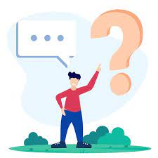
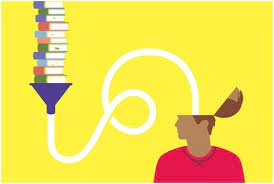

Las técnicas de estudio son una herramienta bastante importante pues con estas podemos realizar mucho mejor las cosas que se nos dificulten pues este es propocito al fin de cuentas esto es importante para nosotros como estudiantes de preparatoria pero esto no quiere decir que solo nos funcione a nosotros de bachillerato esto de echo también les ayuda a los que esten estudiando la secundaria la primaria o incluso la universidad pues esto es una herramienta prácticamente necesaria para aprenderte de manera llamativa lo que no te gusta o simplemente no te llama o incluso si el tema no te interesa en lo absoluto .
Las estratejias de estudio son un básico pues se supone que van de la mano con las técnicas de estudio pues estas son las principales ya que se realizan estratejias para poder mejorar tu estudio estas se basan en lo importante es decir en lo que tu cres que te gustaria agregar para que esto te llame la tencion es decir se te faciliten las cosas .
·Resumen
·Toma de apuntes
·Síntesis
·Mapa Conceptual
·Mapa Mental
·Cuadro Sinóptico
·Estudio de Casos
·Infografías
·Poner en práctica lo aprendido
·Análisis de Contenidos
·Autoevaluación
·Administrar el Tiempo
·Organización a Estudiar
·Organización de Tareas, Trabajos, proyectos, etc.
·Controlar Nervios o Impulsos Negativos

·Subrayar o resaltar información importante
·Hacer esquemas o mapas conceptuales
·Estar atento a clase y anotar los más relevante
·Crear tu propio diccionario
·Ser organizado en el estudio
·Tener un buen descanso
·Tener el lugar de trabajo limpio y recogido
·Estudiar los temas que no sabes
·Crear tarjetas de estudio
·Asociar los contenidos a tus gustos
·Buscar videos
·Crear o juntarte con personas estudiosas
·Repasar siempre los apuntes
·Estar siempre motivado
